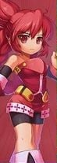

← Personagens
MODO MISSÃO · PROTÓTIPO JOGÁVEL
♫ Áudio: ligado

Elesis
Vale da Ruína · Fase 1
100 / 100 HP
0 / 100 MP
PONTOS
0
0 / 8 inimigos
Derrote os inimigos e alcance o portal!
Jogar novamente
Escolher outro personagem